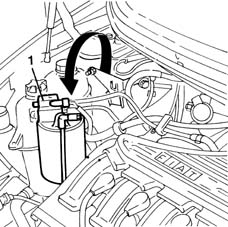
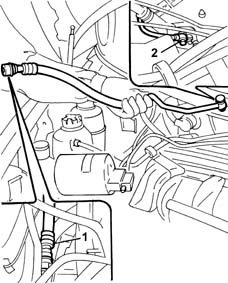

4130B75 return pipe between power steering case and duplex pipes r r for right hand drive versions
- Path
- Procedures > 41 STEERING > 4130 POWER ASSISTED STEERING > 4130B power steering hydraulic sytem > 4130B75 return pipe between power steering case and duplex pipes r r for right hand drive versions
- Kind
- repair procedure (removal / refitting; the operation number is the code)
- Applies to
- all engines; all production periods
- Interactive page
- https://sloeber94.github.io/elrnDB-fMltpl/en/#/2891700
Applies to: all engines; all production periods; only with equipment: Right hand drive
 Removing
Removing
 Refitting
RefittingDisconnect the battery terminals.
Position a suitable container underneath the vehicle to collect the fluid.
Drain the fluid from the power assisted steering fluid reservoir using a syringe.
Applies to: engines: 1.6 16v; all production periods; only with equipment: Right hand drive
1. Release the active charcoal filter from the fastening guides and move it aside.

Applies to: all engines; all production periods; only with equipment: Right hand drive
1. Disconnect the rapid connector for the rigid section of the heat exchanger pipe.
2. Undo the connector for the pipe on the power assisted steering box and remove the pipe releasing it from the retaining bands.

Applies to: all engines; all production periods; only with equipment: Right hand drive
Refitting
RemovingPosition the pipe tightening the connector on the power assisted steering box and securing it to the retaining bands.
Connect the rapid connector for the pipe.
Applies to: engines: 1.6 16v; all production periods; only with equipment: Right hand drive
Position the active charcoal filter.
Applies to: all engines; all production periods; only with equipment: Right hand drive
4130B14 Power assisted steering fluid reservoir CAP - R.R. - Check level and top up if necessary.
Connect the battery terminals.